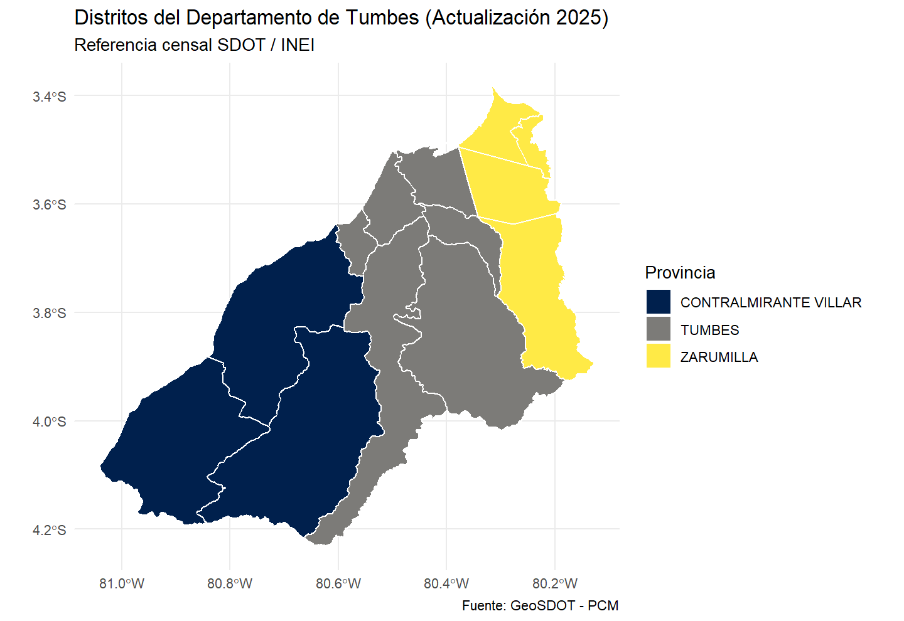
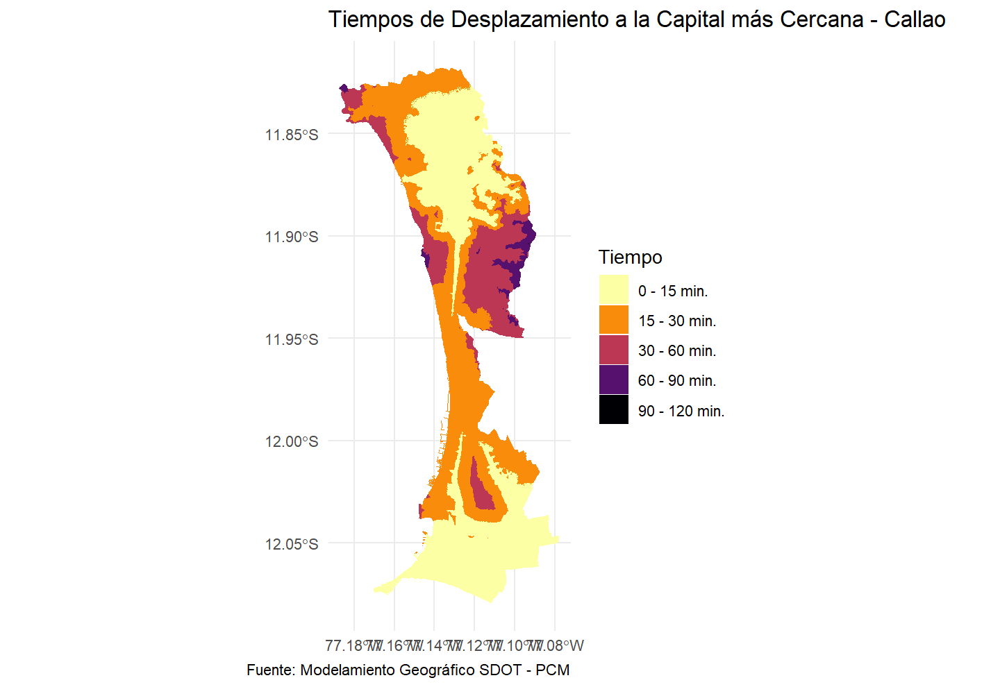

Modelamiento Territorial, Flujos de Movilidad y Límites 2025
Paul Efren Santos Andrade
2026-11-25
Source:vignettes/modelamiento-economico-movilidad.Rmd
modelamiento-economico-movilidad.RmdIntroducción
A partir de la versión 0.2.0, rsdot amplía
su cobertura territorial conectando directamente con las capas de
modelamiento geográfico, flujos de movilidad y límites censales
actualizados (2025) alojadas en el repositorio OSF de SDOT-PCM.
En esta viñeta se muestra cómo acceder y visualizar:
-
Límites distritales actualizados 2025:
get_distritos_2025()yget_distritos(ano = 2025). -
Densidades de actividades económicas y viviendas:
get_densidad_comercio(),get_densidad_viviendas(),get_densidad_mercados(),get_densidad_financiero()yget_densidad_inmobiliario(). -
Valor Agregado Bruto (VAB) de Centros Poblados:
get_vab_ccpp(). -
Flujos de movilidad interdistrital:
get_flujos_estudiantes()yget_flujos_trabajadores(). -
Tiempos de desplazamiento a la capital más cercana:
get_tiempos_desplazamiento().
1. Límites Distritales Actualizados (2025)
La función get_distritos_2025() descarga el GeoPackage
oficial con la actualización distrital 2025 y permite filtrar por
departamento, provincia o distrito de forma insensible a mayúsculas.
tumbes_2025 <- get_distritos_2025(departamento = "TUMBES", show_progress = FALSE)
nrow(tumbes_2025)
#> [1] 13
head(tumbes_2025[, c("ubigeo", "nombdep", "nombprov", "nombdist")])
#> Simple feature collection with 6 features and 4 fields
#> Geometry type: MULTIPOLYGON
#> Dimension: XY
#> Bounding box: xmin: -80.86155 ymin: -4.2319 xmax: -80.18069 ymax: -3.485219
#> Geodetic CRS: WGS 84
#> # A tibble: 6 × 5
#> ubigeo nombdep nombprov nombdist geom
#> <chr> <chr> <chr> <chr> <MULTIPOLYGON [°]>
#> 1 240101 TUMBES TUMBES TUMBES (((-80.40358 -3.485408, …
#> 2 240104 TUMBES TUMBES PAMPAS DE HOSP… (((-80.434 -3.658768, -8…
#> 3 240105 TUMBES TUMBES SAN JACINTO (((-80.43971 -3.626115, …
#> 4 240106 TUMBES TUMBES SAN JUAN DE LA… (((-80.44683 -3.598937, …
#> 5 240201 TUMBES CONTRALMIRANTE VILLAR ZORRITOS (((-80.60283 -3.639535, …
#> 6 240202 TUMBES CONTRALMIRANTE VILLAR CASITAS (((-80.60814 -3.823062, …
ggplot(tumbes_2025) +
geom_sf(aes(fill = nombprov), color = "white", linewidth = 0.4) +
scale_fill_viridis_d(option = "cividis", name = "Provincia") +
theme_minimal() +
labs(
title = "Distritos del Departamento de Tumbes (Actualización 2025)",
subtitle = "Referencia censal SDOT / INEI",
caption = "Fuente: GeoSDOT - PCM"
)
plot of chunk plot-distritos-2025
2. Modelamiento Geográfico: Densidades y VAB
Las grillas de densidad permiten identificar polos de concentración comercial, financiera, inmobiliaria, de mercados y de viviendas. Todas comparten una estructura uniforme y pueden filtrarse espacialmente por departamento.
dens_com <- get_densidad_comercio(show_progress = FALSE)
dens_com |>
st_drop_geometry() |>
select(gridcode, nivel, rango)
#> # A tibble: 5 × 3
#> gridcode nivel rango
#> <dbl> <chr> <chr>
#> 1 1 Densidad Muy Baja de comercios 29 - 120 comercios/km2
#> 2 2 Densidad Baja de comercios 120 - 280 comercios/km2
#> 3 3 Densidad Media de comercios 280 - 560 comercios/km2
#> 4 4 Densidad Alta de comercios 560 - 1100 comercios/km2
#> 5 5 Densidad Muy Alta de comercios > 1100 comercios/km2También es posible consultar el Valor Agregado Bruto
(VAB) modelado a nivel de centros poblados (grilla de 150 m)
para Lima Metropolitana, Callao o el ámbito nacional
("total").
vab_callao <- get_vab_ccpp(cobertura = "callao", show_progress = FALSE)
nrow(vab_callao)
#> [1] 7
head(st_drop_geometry(vab_callao))
#> # A tibble: 6 × 26
#> ubigeo codcp departamen provincia distrito cen_pob pob viv viv_part
#> <chr> <chr> <chr> <chr> <chr> <chr> <dbl> <dbl> <dbl>
#> 1 070101 0701010001 CALLAO CALLAO CALLAO CALLAO 451260 119397 119033
#> 2 070102 0701020001 CALLAO CALLAO BELLAVI… BELLAV… 74851 20630 20578
#> 3 070103 0701030001 CALLAO CALLAO CARMEN … CARMEN… 42240 11234 11222
#> 4 070104 0701040001 CALLAO CALLAO LA PERLA LA PER… 61417 18537 18526
#> 5 070105 0701050001 CALLAO CALLAO LA PUNTA LA PUN… 3829 1466 1462
#> 6 070106 0701060001 CALLAO CALLAO VENTANI… VENTAN… 315600 99230 99166
#> # ℹ 17 more variables: viv_part_o <dbl>, viv_part_1 <dbl>, pob_viv_pa <dbl>,
#> # y <dbl>, x <dbl>, fuente_fin <chr>, revision <chr>, estado_coo <chr>,
#> # empate <chr>, ubigeo1 <chr>, r <chr>, dfp <chr>, urb_rur <chr>,
#> # obs_u_r <chr>, idprov <chr>, capital <chr>, vab_total <dbl>3. Flujos de Movilidad Interdistrital
Las capas de análisis geográfico representan vectores origen-destino diarios para estudiantes y trabajadores segmentados por rangos de volumen de viajes.
# Flujos de estudiantes entre 100 y 1,000 viajes
flujos_est <- get_flujos_estudiantes(rango = "100_1000", show_progress = FALSE)
nrow(flujos_est)
#> [1] 2964
head(st_drop_geometry(flujos_est))
#> # A tibble: 6 × 13
#> salen dep_salen prov_salen dist_salen entran dep_entran prov_entra dist_entra
#> <chr> <chr> <chr> <chr> <chr> <chr> <chr> <chr>
#> 1 010101 AMAZONAS CHACHAPOY… CHACHAPOY… 010307 AMAZONAS BONGARA JAZAN
#> 2 010101 AMAZONAS CHACHAPOY… CHACHAPOY… 010701 AMAZONAS UTCUBAMBA BAGUA GRA…
#> 3 010201 AMAZONAS BAGUA BAGUA 010203 AMAZONAS BAGUA COPALLIN
#> 4 010201 AMAZONAS BAGUA BAGUA 010206 AMAZONAS BAGUA LA PECA
#> 5 010201 AMAZONAS BAGUA BAGUA 010701 AMAZONAS UTCUBAMBA BAGUA GRA…
#> 6 010201 AMAZONAS BAGUA BAGUA 010704 AMAZONAS UTCUBAMBA EL MILAGRO
#> # ℹ 5 more variables: x_salen <dbl>, y_salen <dbl>, valor <dbl>, hubname <chr>,
#> # hubdist <dbl>4. Tiempos de Desplazamiento a la Capital más Cercana
La función get_tiempos_desplazamiento() devuelve las
isócronas departamentales de accesibilidad hacia la capital más
cercana.
tiempos_callao <- get_tiempos_desplazamiento(departamento = "CALLAO", show_progress = FALSE)
tiempos_callao |>
st_drop_geometry() |>
head(5)
#> # A tibble: 5 × 6
#> dn cat_tiempo fid_origen capa nombdep iddpto
#> <chr> <chr> <dbl> <chr> <chr> <chr>
#> 1 2 15 - 30 min. 33579 15_lima CALLAO 07
#> 2 4 60 - 90 min. 26041 15_lima CALLAO 07
#> 3 3 30 - 60 min. 27556 15_lima CALLAO 07
#> 4 5 90 - 120 min. 28339 15_lima CALLAO 07
#> 5 4 60 - 90 min. 29406 15_lima CALLAO 07
ggplot(tiempos_callao) +
geom_sf(aes(fill = cat_tiempo), color = NA) +
scale_fill_viridis_d(option = "inferno", direction = -1, name = "Tiempo") +
theme_minimal() +
labs(
title = "Tiempos de Desplazamiento a la Capital más Cercana - Callao",
caption = "Fuente: Modelamiento Geográfico SDOT - PCM"
)
plot of chunk plot-tiempos-callao